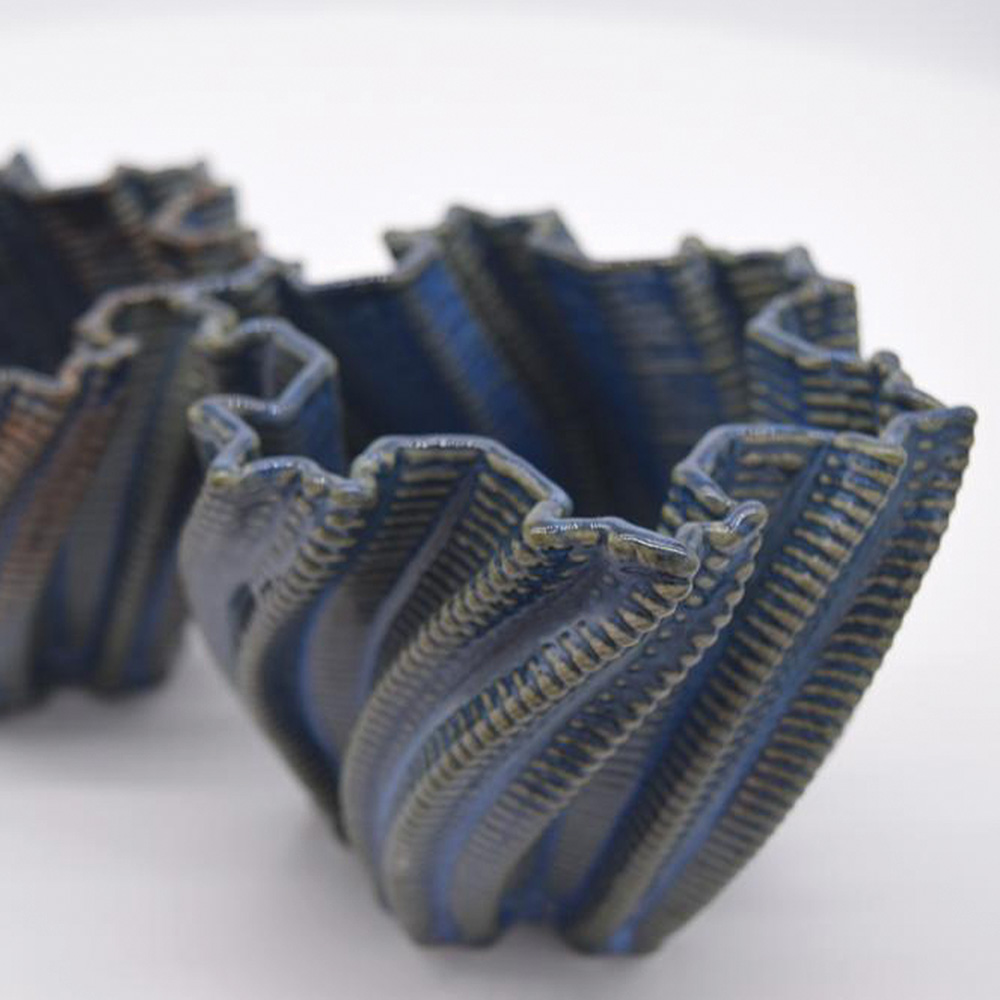
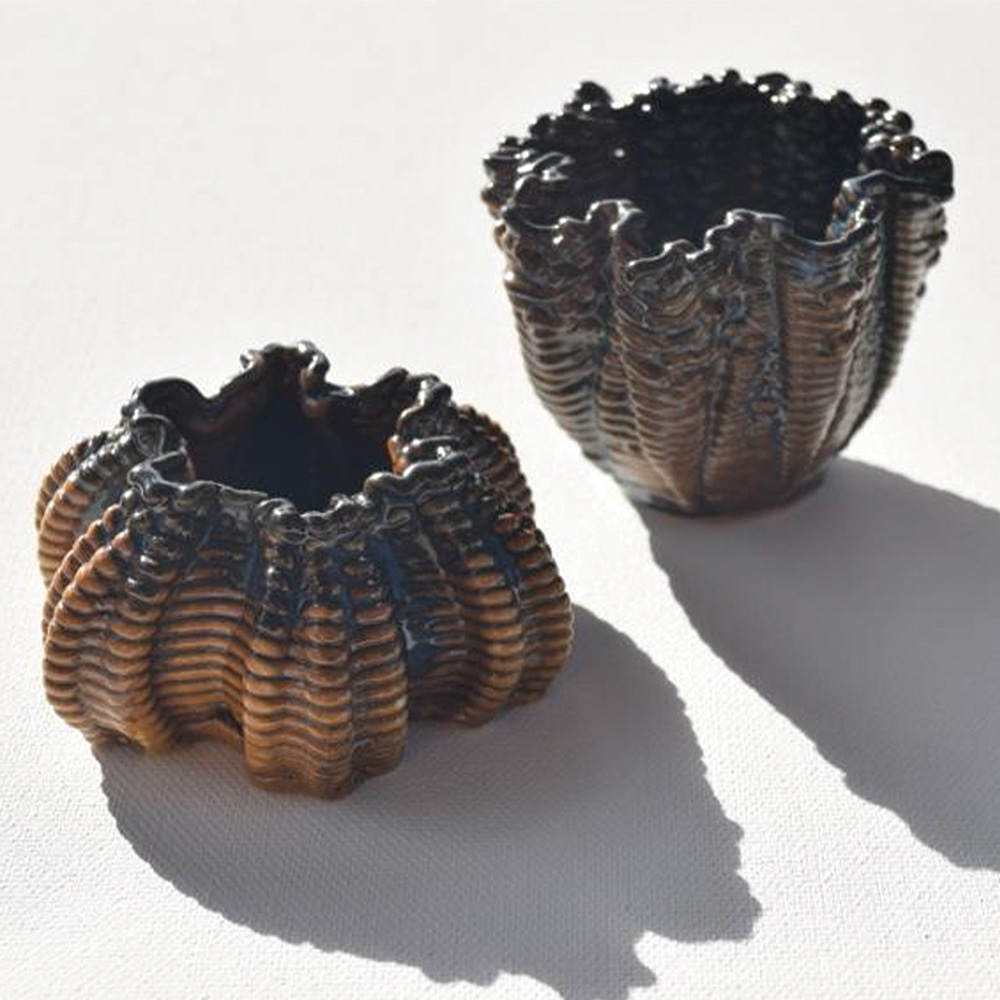
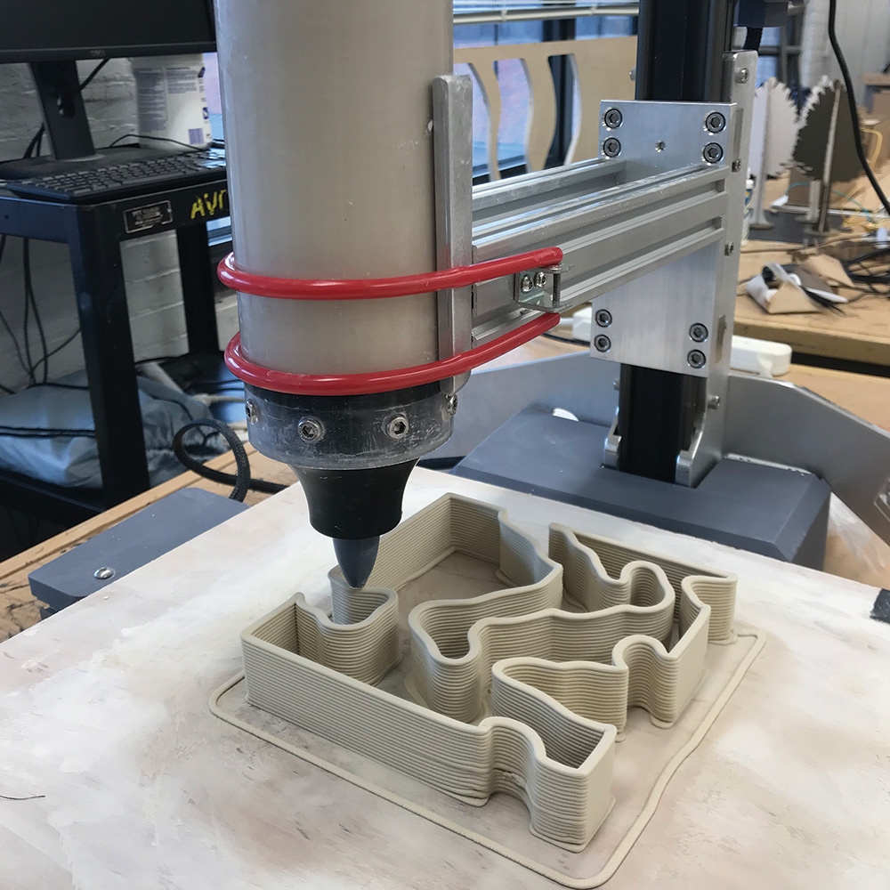
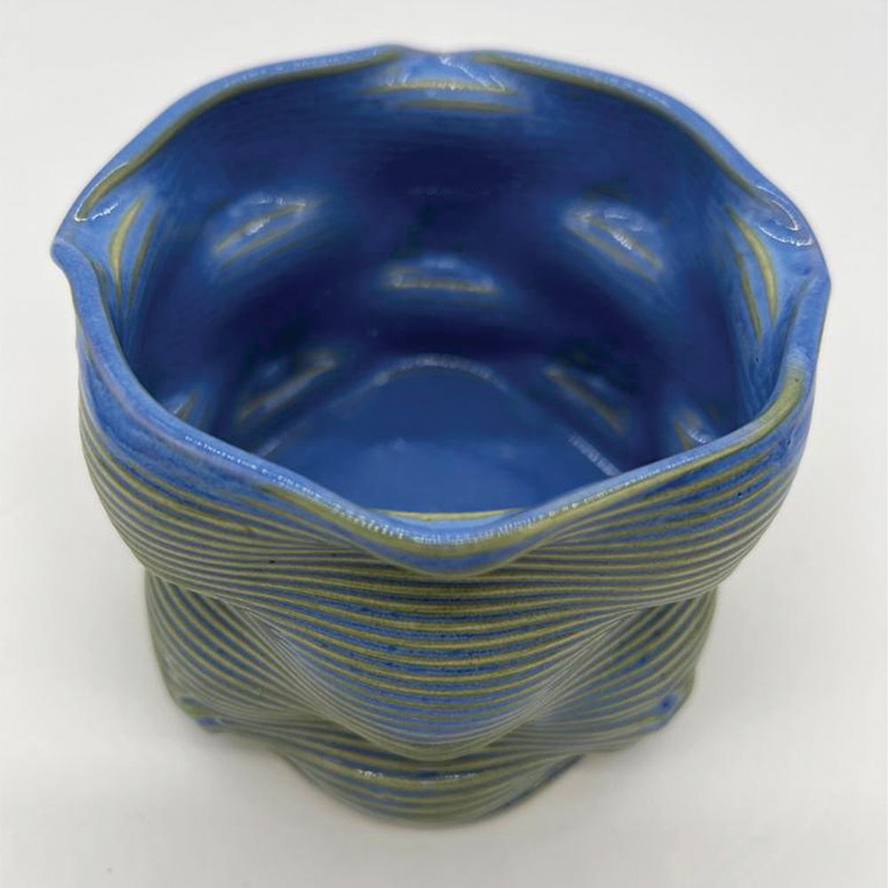

Digital technology and tools such as 3D printers and robots used as a medium to create new fabrication process and ceramic projects in my own style. Furthermore, digital techniques and applications have been involved to create the desired fabrication process while historical background and traditional values has been always considered.



